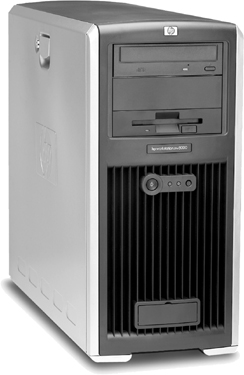
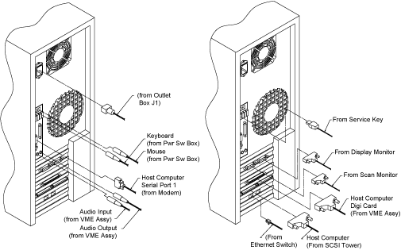

Operating Documentation
Direction 5114045-800, Rev# 10
LightSpeed 4.X Service Information (Advanced)
Operating Documentation |
The Global Console - Linux (GOC2) uses an HP xw8000 Workstation (see Illustration 1), running Linux OS, as the Host Computer. With the exception of a hard disk swap, to retain customer image data (if necessary), this workstation contains no field serviceable parts. For specific product information, please refer to the manufacturer’s web site, at: http://www.hp.com.
Illustration 1: Hewlett Packard (HP) Workstation xw8000

Illustration 2: HP xw8000 Rear Connections
